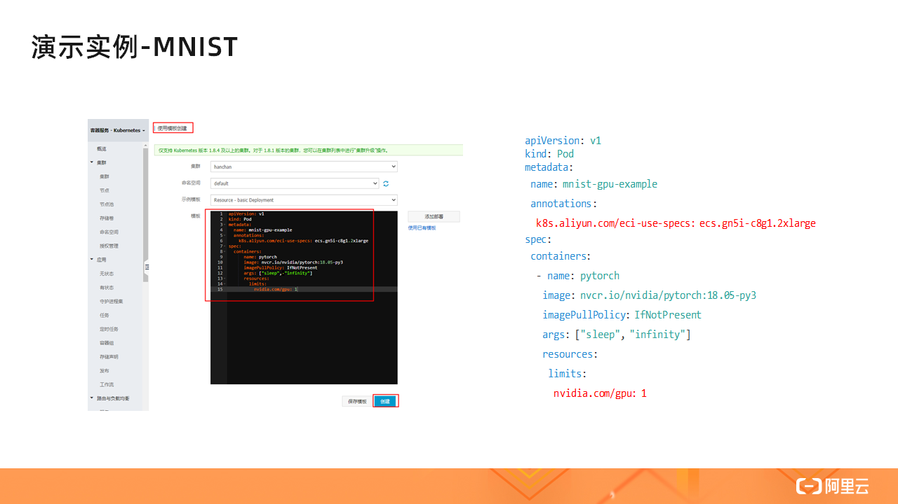

- 01 架构的演进.md
- 02 Serverless 的价值.md
- 03 常见 Serverless 架构模式.md
- 04 Serverless 技术选型.md
- 05 函数计算简介.md
- 06 函数计算是如何工作的？.md
- 07 函数粘合云服务提供端到端解决方案.md
- 08 函数计算的开发与配置.md
- 09 函数的调试与部署.md
- 10 自动化 CI&CD 与灰度发布.md
- 11 函数计算的可观测性.md
- 12 典型案例 1：函数计算在音视频场景实践.md
- 13 典型案例 3：十分钟搭建弹性可扩展的 Web API.md
- 14 Serverless Kubernetes 容器服务介绍.md
- 15 Serverless Kubernetes 应用部署及扩缩容.md
- 16 使用 Spot 低成本运行 Job 任务.md
- 17 低成本运行 Spark 数据计算.md
- 18 GPU 机器学习开箱即用.md
- 19 基于 Knative 低成本部署在线应用，灵活自动伸缩.md
- 20 快速构建 JenkinsGitlab 持续集成环境.md
- 21 在线应用的 Serverless 实践.md
- 22 通过 IDEMaven 部署 Serverless 应用实践.md
- 23 企业级 CICD 工具部署 Serverless 应用的落地实践.md
- 24 Serverless 应用如何管理日志&持久化数据.md
- 25 Serverless 应用引擎产品的流量负载均衡和路由策略配置实践.md
- 26 Spring CloudDubbo 应用无缝迁移到 Serverless 架构.md
- 27 SAE 应用分批发布与无损下线的最佳实践.md
- 28 如何通过压测工具+ SAE 弹性能力轻松应对大促.md
- 29 SAE 极致应用部署效率.md
18 GPU 机器学习开箱即用
ECI GPU 简介

相较于普通的 ECI 实例，ECI GPU 实例为用户容器提供了 GPU 资源以加速机器学习等任务的运行，其典型架构如上图所示。ECI GPU 实例预装了 GPU 驱动，免去了用户安装和维护 GPU 驱动的麻烦。同时，ECI GPU 实例同普通的 ECI 实例一样兼容 CRI 接口，Kubernetes 也可以直接对 ECI GPU 实例进行调度和编排。此外，利用官方容器镜像，用户无需关心 CUDA Toolkit/Tensorflow/PyTorch 等工具和框架的搭建部署，只需要专注于具体业务功能的开发和实现。
通过 ECI GPU 实例，用户可以一键式部署和运行经过 GPU 加速的机器学习等业务，简单方便。
ECI GPU 基本实现原理
大家知道，容器一般是通过内核接口访问主机上的资源。但是对于 GPU 资源，容器无法直接通过内核接口访问到，只能通过厂商驱动与 GPU 进行交互。
那么，ECI GPU 实例是如何让用户容器实例访问到 GPU 资源的呢？本质上，ECI GPU 就是在用户容器创建时将 GPU 驱动的一些必要的动态库文件挂载到用户容器中，从而使得用户容器可以通过这些挂载的动态库文件访问到位于 Host 端的 GPU。

ECI GPU 的基本实现框架如上图所示，图中所有方框代表的组件都运行在 ECI HostOS 侧。其中 ContainerAgent 是自研的一个组件，可以类比与 Kubelet，其接受来自管控的指令；右上角的 nvidia-container-runtime-hook 是 NVIDIA 开源实现的一个符合 OCI 标准的一个 prestart hook，prestart hook 用于在容器执行用户指定的的命令前执行一些自定义配置操作；右侧中间位置的 libnvidia-container 也是一个 NVIDIA 开源的一个组件，用于将 Host 侧 GPU 驱动的动态库挂载到指定容器中。
简单介绍一下 ECI GPU 下的容器启动流程：
- containerd 从 ContainerAgent 中接收来自管控的创建使用 GPU 的容器的命令并将该命令下发给 runc
- runc 创建容器时调用 prestart hook，即 nvidia-container-runtime-hook
- hook 调用 libnvidia-container 将必要的 GPU 驱动动态库，如 libcuda.so、libnvml.so 等文件，挂载到容器上
- 容器创建完成后，用户容器进程通过上述挂载的动态库文件访问并使用 GPU 资源
ECI GPU 使用方式

目前在 ACK/ASK 集群中使用 GPU，只需要在 YAML 文件中指定两个字段即可，如上图标红处所示。
第一个字段是 k8s.aliyun.com/eci-use-specs，该字段用于指定 ECI GPU 实例规格，当前阿里云上可用的 ECI GPU 实例规格已经列在左图的表格中了。
第二个字段是 nvidia.com/gpu，该字段用于指定该容器所要使用的 GPU 数量。注意，spec 中所有容器指定要使用的 GPU 数量总和不能超过 k8s.aliyun.com/eci-use-specs 字段指定的 ECI GPU 实例规格所提供的 GPU 数量，否则容器会创建失败。
演示
视频演示过程请点击【视频课链接】进行学习。
最后简单演示一下如何在 ACK 集群中使用 GPU 加速执行机器学习任务。我们以在 ASK 集群中进行 MNIST（手写数字识别）训练任务为例：

该任务由 YAML 文件定义，如上图所示。我们在 YAML 文件中指定了 ECI GPU 实例类型，该实例类型包含一颗 NVIDIA P4 GPU。然后我们指定了容器镜像为 nvcr.io/nvidia/pytorch，该镜像是由 NVIDIA 提供，内部已经封装好了 CUDA/PyTorch 等工具。最后，我们通过 nvidia.com/gpu 指定了要使用的 GPU 数量为 1。
如上图所示，在 ASK 集群中，我们选择使用模板创建应用实例，然后在模板中输入右侧 YAML 文件的内容，最后点击创建即可创建一个使用 GPU 的容器了。

容器创建完成之后，首先我们通过 kubectl 命令登录到我们创建的容器中，然后执行 nvidia-smi 命令确认 GPU 是否可用。如上图中的左上角截图所示，nvidia-smi 命令成功返回了 GPU 的信息，如 GPU 的型号的 P4，驱动版本号是 418.87.01，CUDA 版本为 10.1 等，这表示了我们创建的容器是可以正常使用 GPU 资源的。
接着，如上图中的右侧截图所示，我们进入 /workspace/examples/mnist 目录下执行 python main.py 开始执行 MNIST 训练任务，MNIST 训练任务会先下载 MNIST 数据集，由于 MNIST 数据集较大可能下载时间会比较长。下载完数据集后，MNIST 训练任务会开始进行数据集的训练。
当 MNIST 任务执行完之后，我们会看到训练结果打印在屏幕上，如上图中左下角截图所示。MNIST 测试集包含 10000 张测试图片，从结果图片我们可以看到其中由 9845 张手写数字图片都被正确识别了，精度已经是相当高。有兴趣的同学可以对比测试一下不使用 GPU 场景下的 MNIST 任务所用的训练时间。
总结
综上所述，ECI GPU 不仅大大加速了用户在云上执行机器学习等任务的执行，并且其免运维免部署的特性使得用户只需要专注于具体业务的实现而不需要关心底层环境的部署，真正做到开箱即用，方便用户的开发。考虑到用户对计算力的需求，未来我们还会有 vGPU 的实例供用户选择，以进一步降低用户成本，敬请期待。